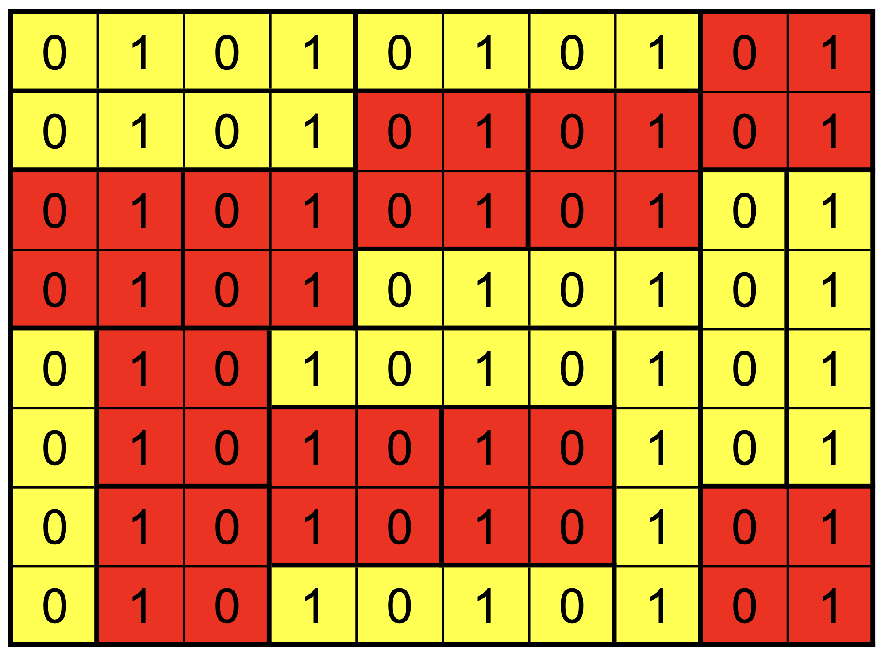
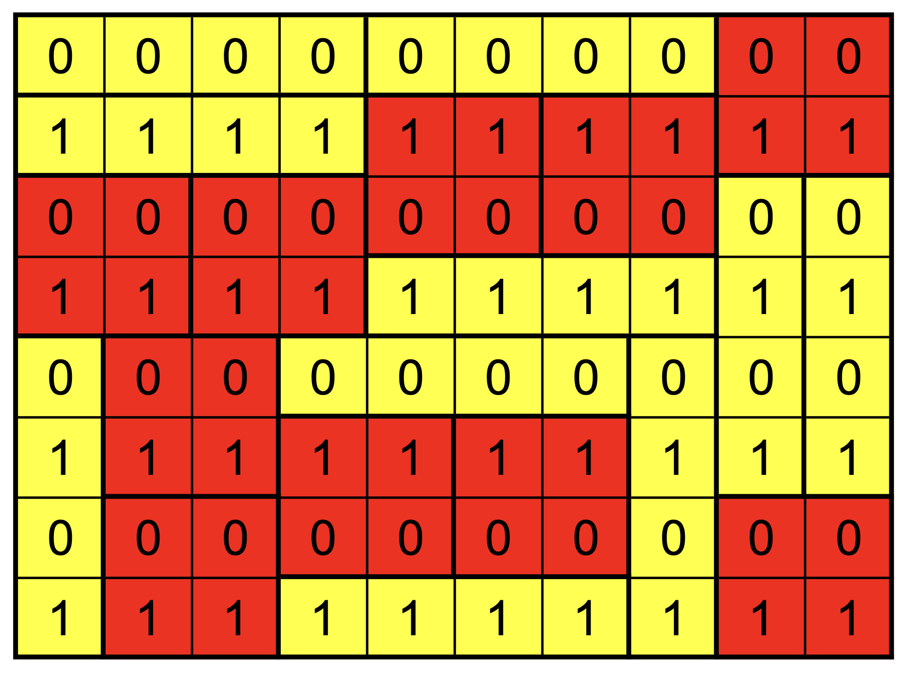
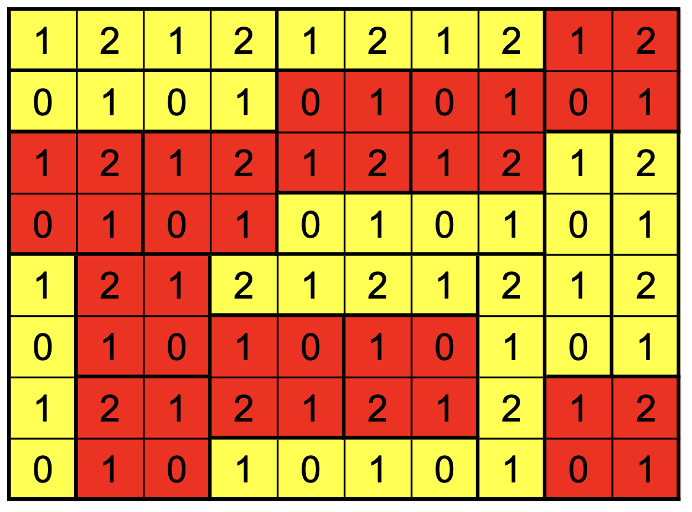

Tilings I
The joy of simple puzzles. Always think of the invariant. Curation is doing the Lord’s work. How to put a number to a geometric constraint? This thing called parity.
Foreword
This is a translated “retelling” of the second entry Plattenlegen I in the fabulous 50 Jahre Bundeswettbewerb Mathematik [1].
The Exercise
Exercise 3 from the second round of the 1972/73 German National Olympiad.
A rectangular room of dimension $a \times b$ has been tiled using rectangular tiles of dimensions $4\times 1$ and $2\times 2$ . Prove that it is impossible to tile the room by using one tile more of one kind and one less of the other kind.
In other words, in any given tiling of a room, substituting one tile of one kind by one of another kind makes tiling impossible, even when allowed to rearrange the tiles completely with the new set.
For example: a $10\times 8$ room (spanning an area of $80$) can be tiled using 10 of each tile, as seen below. However, it cannot be tiled using eleven 4-by-1 tiles and nine 2-by-2 tiles or nine of the former and eleven of the latter.

The Solution
It’s not clear where to begin. For one, both tiles have the same area (4), so substituting one for the other doesn’t change the total area covered and thus doesn’t violate any simple condition.
We intuitively understand that a tiling isn’t only a matter of covering a certain area. It’s a covering of a rectangular area with indivisible blocks which, due to their shape, cannot be combined in any which way and cover an area without any gaps. (A few minutes playing Tetris make this especially clear.)
Reading the problem statement again, we see that a substitution of a tile of one kind anywhere in the room is enough to make tiling impossible. This globality suggests that it’s worth finding a way to assign a quantity to a tile that is the same regardless of the tile’s position, but that is different depending on what kind of tile it is. That should help us argue that a substitution anywhere changes that quantity. If we can additionally prove that the quantity should be constant, we’d then be able to conclude that the substitution violates some principle associated with tilings (i.e. the constant nature of a quantity related to tiles).
For example, area is a quantity invariant of the position of a tile, but also invariant of the kind (both tiles have area 4).
The Jump
(In the exposition of a solution to any mathematical problem, one often reaches the point where a useful perspective, a tool for analyzing the problem is introduced out of thin air. This often makes intuitive sense to the reader immediately and, as will be the case in this article, can even be used to show unsuccessful approaches. Overall, though, it is akin to plot armor; it is inherently magical, delivered as an intuitive conclusion despite being the product of a lot of thinking and trial-and-error. It, however, offers one major benefit: it gives the reader a generalized tool that can be used to attack similar problems. This pedagogical value alone justifies its use.)
Now, how is area measured? Well, we say that a $4 \times 1$ tile has area 4 because it consists of 4 little $1 \times 1$ squares. Indeed, area is nothing but the sum of squares that comprise any shape (in our discrete, rectangular world). Thus, a way of looking at the diagram above would be the following:
The quantity assigned to any tile is therefore the sum of the quantity in each cell. This brings forth a whole new world of assigning quantities to tiles. For example, instead of using 1 everywhere, we can use alternating 0s and 1s.

Summing the cells up again, we see that the possible sums are
-
0, 2 or 4 for the 4-by-1
-
2 for the 2-by-2
Evidently this isn’t enough to distinguish between the two.
At this point, we can take multiple approaches. First, we can try to mathematically formulate what we’ve done thus far–numbering the cells and assigning a value to a tile. Then, based on that, we can randomly try a few more numberings by tweaking the mathematical expressions. For example, the chess checkboard tiling corresponds to
$$ C_{ij} = (i + j) \, \text{mod} \, 2 $$where $C_{ij}$ is the value assigned to cell $(i,j)$, counting from the lower left. Tinkering with this approach is left to the reader.
A second approach is to further articulate the difference between the two kinds of tiles. Note that a 4-by-1 is one-dimensional: it’s either on a single row or a single column. A 2-by-2 on the other hand is always two-dimensional. We can therefore try alternating the 0s and 1s row-by-row. That is, $C_{ij} = i\,\,\text{mod}\,2$. (Observe how this could just as well have been the result of fiddling around with the algebraic expression instead of a derivation attempt through careful analysis.)

Look at the possibilities:
-
2-by-2s always sum to 2
-
4-by-1s sum to 0, 2, or 4
This may seem just as unproductive as the chessboard pattern, but there is a crucial difference this time: it is only the vertical 4-by-1s that coincide with the 2-by-2s. Of course, the choice to alternate over rows is arbitrary. We could just as well alternate over columns. Predictably, we get the same result, only that by alternating over columns, it is instead the horizontal 4-by-1s that coincide (i.e. share the same sum) with the 2-by-2s. Therefore, the key is in somehow combining the two. How can we combine $C_{ij} = i\,\,\text{mod}\,2$ and $C_{ij} = j\,\,\text{mod}\,2$? Well, how about we sum them up?
Let $C_{ij} = (i\,\,\text{mod}\,2) + (j\,\,\text{mod}\,2)$. This yields the following pattern:

Now
-
4-by-1s sum to either 6 or 2
-
2-by-2s sum to 4
We have therefore found a numbering that distinguishes the two kinds of tiles. But, is this distinction really independent of position? Let’s verify!
First, consider horizontal 4-by-1s, which consist of four 1-by-1s in the following format: $(i, j)$,$(i, j+1)$, $(i, j+2)$, and $(i, j+3)$. Summing these four tiles using the formula $C_{ij} = (i\,\,\text{mod}\,2) + (j\,\,\text{mod}\,2)$ yields
$$ 4\times(i\,\,\text{mod}\,2) + (2\times0 + 2\times1) = 4\times(i\,\,\text{mod}\,2)+2 $$which is obviously equal to 2 modulo 4. (Note that, independently of the value of $j\,\,\text{mod}\,2$, there are two zeroes and two ones modulo 2 in the set $\{j, j+1, j+2, j+3\}$, hence the simplification above.)
By symmetry, the same holds for vertical 4-by-1s. The case of 2-by-2s is left as an exercise to the reader.
We thus have proven that the sum of the C-values of a tile is invariant to the tile’s position and that the sums are different for the two kinds of tiles. “OK, so what?” you might ask. How does this help us reach our goal, which was to prove that, once a tiling is found, it is impossible to substitute a tile of one kind for a tile of another kind and find another tiling (by e.g. rearranging the new set of tiles).
Well, look at the sum of the C-values of all the 1-by-1s in the room:
$$ I = \Big(\sum_{(i, j)}C_{ij}\Big)\,\,\text{mod}\,4 $$Crucially, this quantity (known as the parity) is also independent of any tiling. This means, for any tiling of the room, the sum of the C-values of those tiles has to be equal to $I$ (modulo 4). Since the two different kinds of tiles have different sums of C-values (modulo 4), they are not interchangeable; else, the parity of the room would change, which is impossible.
References
[1] E. Specht, E. Quaisser, and P. Bauermann, Eds., 50 Jahre Bundeswettbewerb Mathematik. Springer Berlin Heidelberg, 2020.